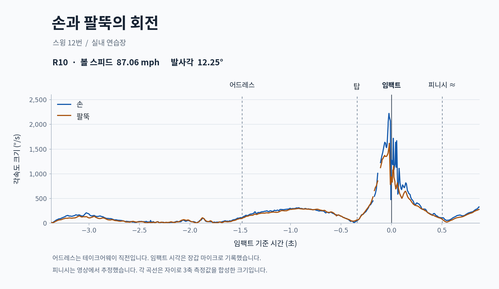
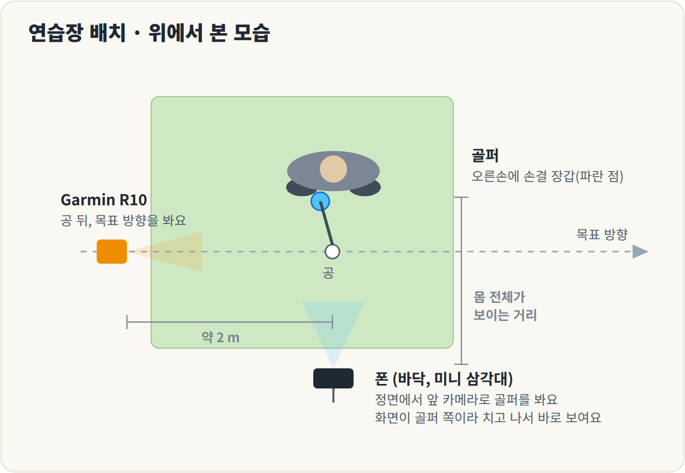
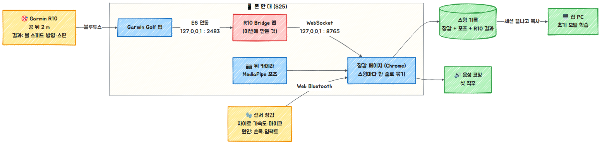
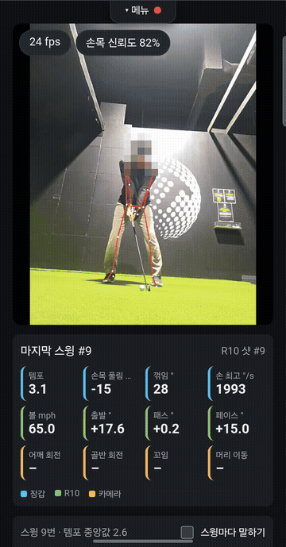
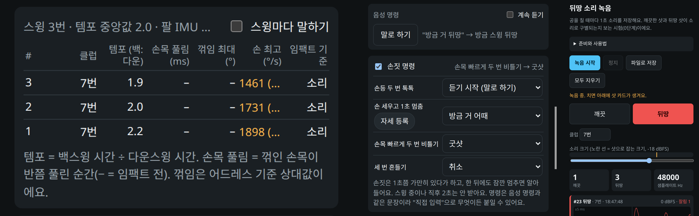

보는 AI 7편: 혼자서 제품 하나를 끝까지 만들 수 있을까¶
보는 AI · 7편. 그림으로 보는 소리·움직임 AI 시리즈예요. 0편부터 읽기
광고 영상의 첫 장면이에요. AI로 만든 영상이에요.
6편 끝에서 다음은 제 골프 스윙이라고 했어요. 장갑에 센서를 붙여서 소리와 움직임을 같이 재 보려던 거였죠. 그런데 만들다 보니 엉뚱한 궁금증이 생겼어요. 이걸 혼자서 진짜 제품처럼 끝까지 만들어 볼 수 있을까? 이름도 짓고, 세상에 공개도 하고, 광고까지요. 옆에 팀은 없고, AI 도구들만 있었어요.
카메라가 놓친 손목¶

그림 속 골퍼는 AI로 만든 사람이에요.
시작은 폰 카메라였어요. 스윙을 찍고 자세 AI에게 관절을 찾게 하니, 어깨랑 엉덩이는 끝까지 잘 따라가더라고요. 문제는 손이었어요. 다운스윙에서 손이 제일 빠른데, 바로 그 순간 화면에서 흐려지고 AI도 손목을 놓쳐 버렸어요. 골프에서 제일 궁금한 게 그 손목인데요.
그래서 손에 직접 센서를 붙이기로 했어요.
손등에 하나, 팔뚝에 하나¶

손등에는 엄지손톱만 한 보드를 올렸어요. 작은데 움직임 센서, 마이크, 블루투스까지 다 들어 있어요. 팔뚝에도 센서를 하나 더 달았어요. 두 센서의 움직임 차이를 보면 손목이 얼마나 꺾이고 풀리는지 알 수 있거든요. 케이스는 집에 있는 3D 프린터로 몇 번이고 다시 뽑았어요.

스윙이 그림이 되는 순간¶

처음 연습장에서 장갑을 끼고 친 날, 폰에 뜬 그래프를 한참 들여다봤어요. 천천히 올라갔다가 잠깐 멈추고, 확 내려와서 공을 치는 순간 그래프가 튀어요. 3편에서 본 움직임 그림이 제 스윙으로 그려진 거예요. 이 스윙은 백스윙에 1초 남짓, 다운스윙은 그 3분의 1쯤 걸렸어요. 공은 시속 87마일쯤으로 날아갔고요.
소리로 듣는 뒤땅¶

장갑에 마이크가 있으니 소리도 같이 들어와요. 잘 맞은 공은 '딱' 하고 높은 소리가 날카롭게 터지는데, 뒤땅은 '퍽' 하고 둔하게 가라앉아요. 귀로 들어도 다르고, 1편의 소리 그림으로 봐도 달라요. 그런데 폰으로 녹음한 걸 많이 모아 보니 생각보다 겹치는 게 많았어요. 소리만으로 뒤땅을 가려내기엔 아직 부족해요.
공은 어디로 갔을까¶

같은 배치를 영상으로 옮겨 봤어요. 3D 모형으로 R10과 폰 자리를 짚고, 골퍼 앞에서 AI 영상 스윙으로 넘어가요. 골퍼는 AI로 만든 사람이에요.

스윙만 재면 반쪽이에요. 그래서 공이 어떻게 날아갔는지 재는 장비(Garmin R10)를 붙였어요. 공을 치면 R10이 공 속도와 각도를 보내 주고, 폰이 그걸 바로 앞 스윙과 짝지어요. 연습장에서 처음 해 봤을 땐 몇 번 놓쳤어요. 고친 뒤 그날 기록으로 다시 돌려 보니 아홉 번 다 맞게 짝지었어요.

실제 폰 화면을 녹화했어요. 치고 나면 스윙 숫자와 R10 결과가 바로 카메라 위에 떠요. 얼굴은 가렸어요.

멈춰서 보면 이래요. 위 카드의 파란 줄은 장갑이 잰 값이에요. 템포, 손목이 풀린 시점, 손목 꺾임, 손이 가장 빨리 돈 속도요. 초록 줄은 R10이 잰 값이에요. 공 속도와 방향, 클럽이 지나간 길과 페이스 각도요. 아래 두 그림은 장갑 마이크로 들은 타격음과 장갑이 느낀 타격 진동이에요. 공 한 번 치고 고개만 돌리면 이게 다 보여요.
이제 '이렇게 휘둘렀더니 이렇게 날아갔다'가 한 줄씩 쌓여요. 사실 R10은 정답지예요. 스윙마다 답을 붙여 두면, 언젠가 AI가 그걸 배워서 R10 없이도 공이 어떻게 날아갔는지 말해 줄 수 있을 테니까요.
폰을 꺼내지 않고¶

연습장에서는 폰 화면을 볼 틈이 없어요. 장갑을 낀 손으로 폰을 꺼내 클럽을 바꾸는 것도 번거롭고요. 그래서 장갑으로 다 하게 만들었어요.
클럽은 게임에서 무기 바꾸듯 골라요. 손등을 네 번 톡톡 치면 클럽 고르기가 시작되고, 손목을 다이얼처럼 돌리면 7번, 8번, 9번 하고 넘어가요. 조금 돌리면 천천히, 많이 돌리면 휙휙 넘어가요. 마음에 드는 클럽에서 다시 네 번 톡톡 치면 끝이에요. 솔직히 네 번 톡톡은 아직 잘 안 먹힐 때가 많아서, 지금 손보는 중이에요.
말로도 돼요. 장갑을 톡톡 두 번 치고 "7번 하프"라고 하면 클럽이 바뀌고, "방금 거 뒤땅"이라고 하면 그 샷에 표시가 붙어요. 원하면 스윙이 끝날 때마다 템포와 어깨 회전을 읽어 주고요. 하다 보니 영어로도 되게 만들었어요.
화면도 연습장에서 쓰면서 계속 바뀌었어요. 처음엔 숫자가 빼곡했는데, 지금은 방금 친 스윙의 결과만 크게 보여 줘요. 다음 스윙을 할 때까지 그대로 남아 있어서, 치고 나서 고개만 돌려 보면 돼요.
이름 짓기¶
광고 마지막 장면이에요. 여기엔 아직 옛 영어 표기가 남아 있어요.
제품에는 이름이 있어야죠. 손이 가진 결이라는 뜻으로 손결이라고 지었어요. 손의 움직임을 읽는 장갑이니까요. 영어가 문제였어요. 공식 로마자로 쓰면 영어권 사람이 읽기 어려워 보여서 Songyul로 정했어요. 이름 하나 정하는 데 생각보다 오래 걸렸어요.
세상에 내놓기¶

혼자만 쓰기는 아까워서 GitHub에 올렸어요. 누구나 가져다 만들어 볼 수 있어요. 그런데 올리는 것보다 올리면 안 되는 걸 걸러 내는 데 시간이 더 들었어요. 사진에 남은 위치 정보, 메모에 섞인 개인 정보 같은 것들이요. 아직 고칠 곳도 숨기지 않고 적어 뒀어요.
그리고 광고¶
30초 광고예요. 일부 장면은 AI로 만든 영상이에요.
마지막은 광고였어요. 제가 장갑을 낀 사진을 영상 AI에 넣었더니, 장갑을 비추는 장면과 골퍼가 스윙하는 장면이 나왔어요. 자세, 손목, 손맛, 소리. 장갑이 보는 네 가지를 30초에 담았어요. 화면 속 골퍼는 AI가 만든 사람이에요. 여러 번 고쳐 만드는 사이 영어 표기가 바뀌어서, 광고에는 옛 표기가 그대로 남아 있어요.
그래서, 혼자서 끝까지 됐을까요?¶

반은 됐다고 생각해요. 처음 장갑에 선을 납땜할 때만 해도 이름을 짓고 광고까지 만들 줄은 몰랐어요. 막상 해 보니 혼자서도 꽤 멀리 갈 수 있더라고요. 물론 정말 혼자는 아니었어요. 어려운 판단은 Claude와 상의했고, 코드와 시험은 Codex에 맡겼고, 긴 자료는 로컬 AI가 읽었어요. 그 이야기는 작업 브리지 글에 따로 적었어요.
그런데 연습장에서 손결을 끼고 칠 때마다 마음에 걸리는 게 있어요. 이 장갑을 써 본 사람이 아직 저 하나라는 거예요. 제 손, 제 스윙에서만 잘 읽는 건지 아직 몰라요.
만드는 건 혼자 할 수 있었어요. 제품이 되는 건 다른 사람이 써 봐야 알 것 같아요. 다음 단계는 손결을 다른 손에 끼워 보는 거예요. 그리고 겨울이 지나면, 공을 칠 때마다 옆에서 한마디 해 주는 코치를 만들어 보려고 해요.
다음 편¶
8편에서는 같은 ‘눈’을 로봇 그리퍼에 달아요.